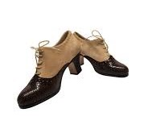

Flamenco Pura
Flamenco dance is a passionate and expressive art form that is characterized by its intricate footwork, graceful
movements, and dramatic turns. Flamenco dancers use their bodies to tell stories and to express emotions such as
love, joy, and sorrow.
Flamenco dancer in a red dress.
Flamenco attire is traditionally very colorful and flamboyant. Flamenco dancers often wear dresses or skirts
with long, flowing trains. The dresses are often made of silk, velvet, or other luxurious fabrics. Flamenco
dancers also often wear shawls, head scarves, and other accessories.
Flamenco dancer in a white dress with a red.
Flamenco shoes have a special design that helps dancers to make the characteristic flamenco sounds with their
feet. The shoes have a hard heel and a soft front, and they are often made of leather or suede.

Here are some of the most common flamenco dances:
- Sevillanas: A lively and festive dance that is often performed in groups.
- Soleá: A slow and soulful dance that is often performed solo.
- Alegrías: A fast and upbeat dance that is often performed by women.
- Tarantos: A passionate and dramatic dance that is often performed by men.
{kind=link}
{kind=link}
{kind=link}
{kind=link}